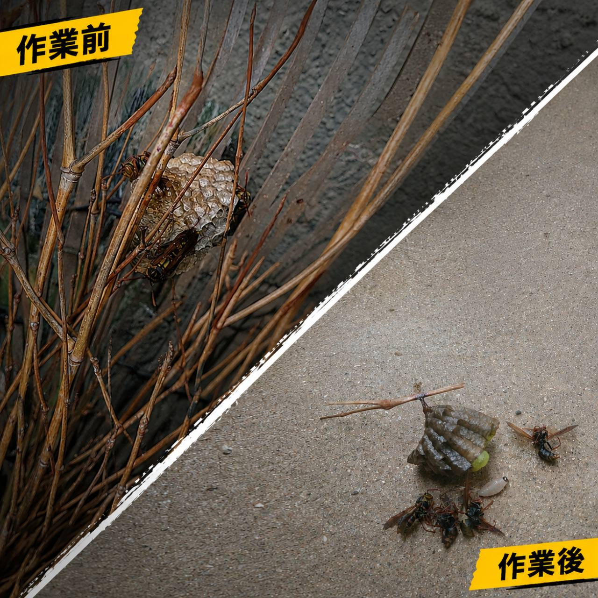
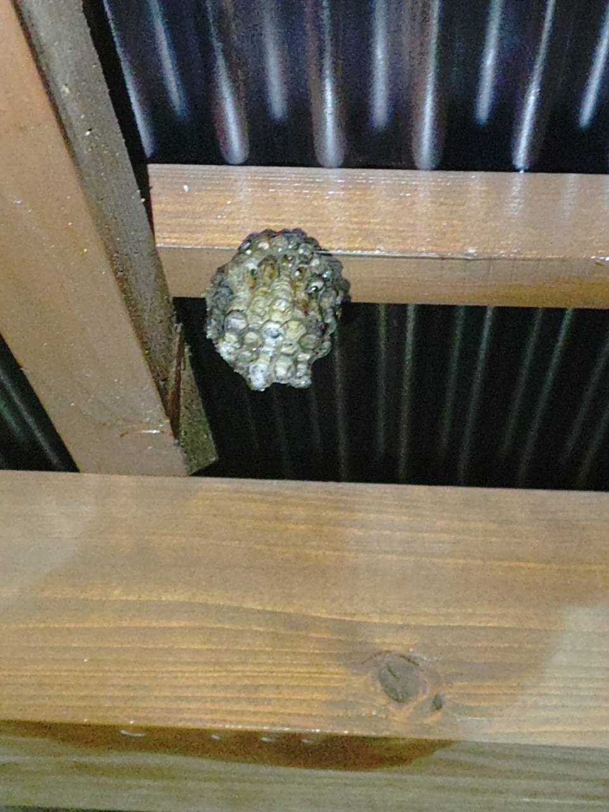
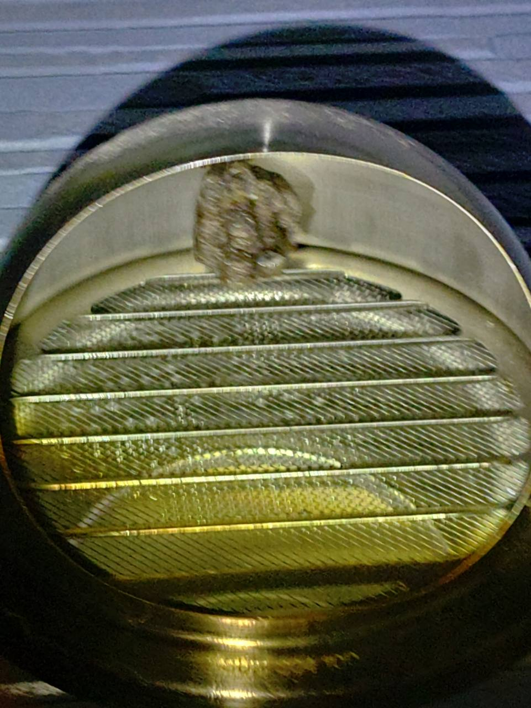
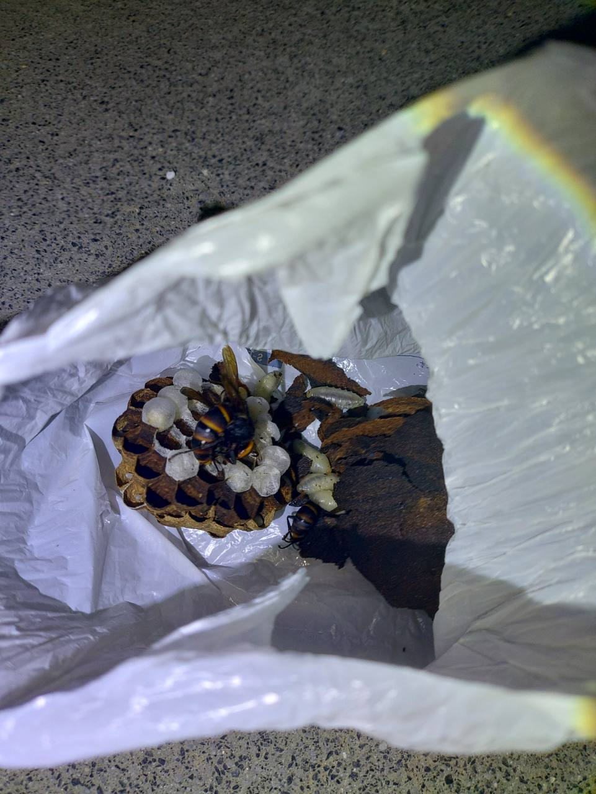
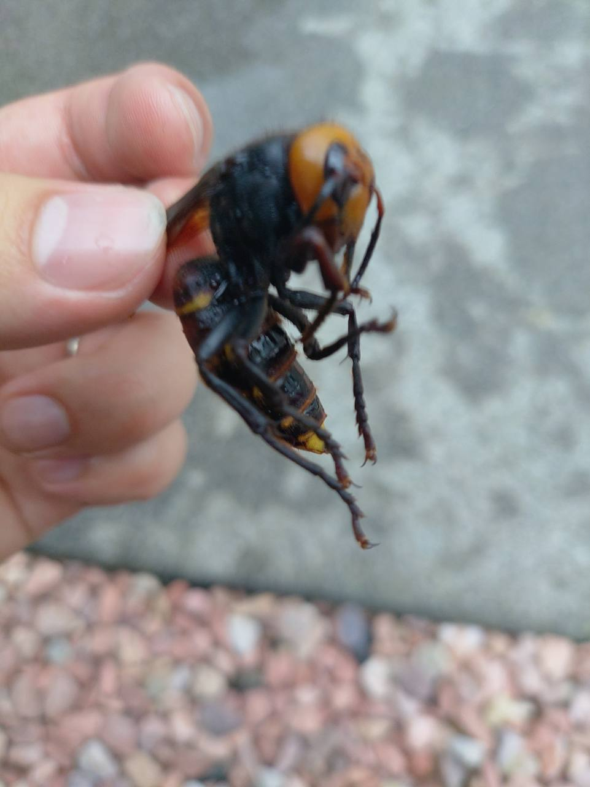
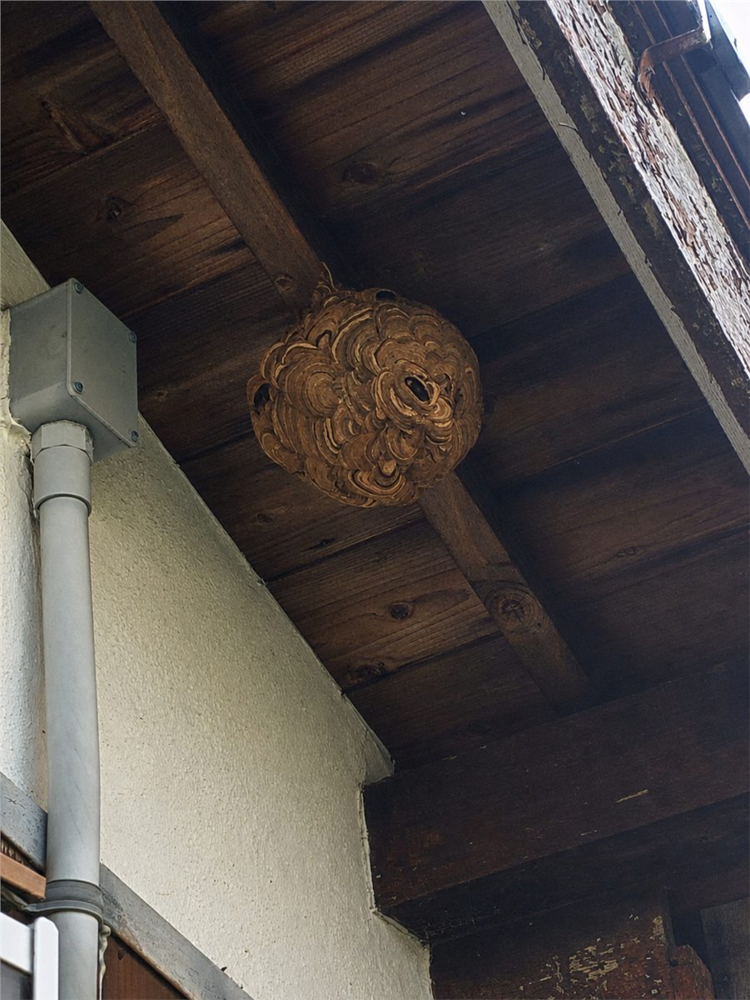

「素早く対応してもらえて、とても助かりました。」
蜂の巣駆除をご依頼のお客様
CLSVR クルサヴァー / くるさば
山口県内対応・周南市拠点
蜂の巣を見つけたら、
無理に近づかずご相談ください。
アシナガバチ・スズメバチなどの巣を調査し、状況を確認して駆除・撤去します。写真1枚から相談できます。
見積もり無料写真相談OK作業前に料金案内
まずは状況確認から
巣の場所が分かる写真を
LINEへ送ってください
「蜂はいるけれど巣が見つからない」「高い場所にあって大きさが分からない」という段階でも大丈夫です。分かる範囲で状況を教えてください。
- 1巣から離れて写真を撮る
- 2住所・高さ・大きさを送る
- 3作業内容と料金をご案内
実際の対応例
現場で確認した蜂の巣
掲載しているのは、実際の相談・作業で確認した写真です。
横にスライドしてご覧ください





お客様の声
ご相談後にいただいた感想
実際にいただいたお声を、個人が特定されないよう短く要約しています。
「地域に寄り添った蜂駆除屋さんで、安心してお願いできました。」
蜂の巣駆除をご依頼のお客様料金の考え方
最低料金 10,000円〜＋ 出張料
現地調査、巣の確認、必要に応じた予防剤（忌避剤）の散布までを含む最低料金です。実際に巣を駆除・撤去する場合は、蜂の種類、巣の大きさ・高さ、作業場所に応じた料金が加わります。
最低料金とは別に出張料金がかかります。追加料金が必要な場合も、作業を始める前に必ずご説明します。
現金PayPayクレジットカード
出張対応
周南市を拠点に
山口県内へ伺います
500円周南市（徳山・新南陽）
1,000円周南市（熊毛・鹿野）・下松市
1,500円光市・防府市
3,000円山口市・田布施町・平生町
9,000円岩国市・柳井市・下関市・長門市・萩市・宇部市・山陽小野田市・美祢市など
表示は税込の出張料金です。9,000円の遠方エリアは高速料金を含みます。掲載外の地域も、まずはご相談ください。
蜂駆除のほかにも
こんなご相談も受け付けています
蜂駆除を中心に、できる範囲で暮らしの困りごとをお手伝いします。
無料相談
巣に近づかず、離れた場所から写真を撮って送ってください
お急ぎなら電話、写真があるならLINE、状況を順番に伝えたい方はWebフォームをご利用ください。